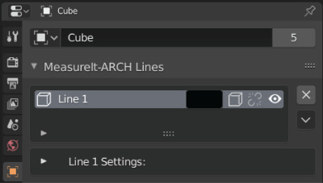
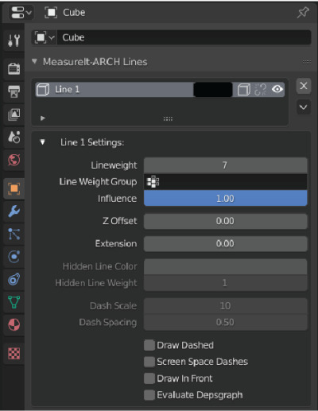
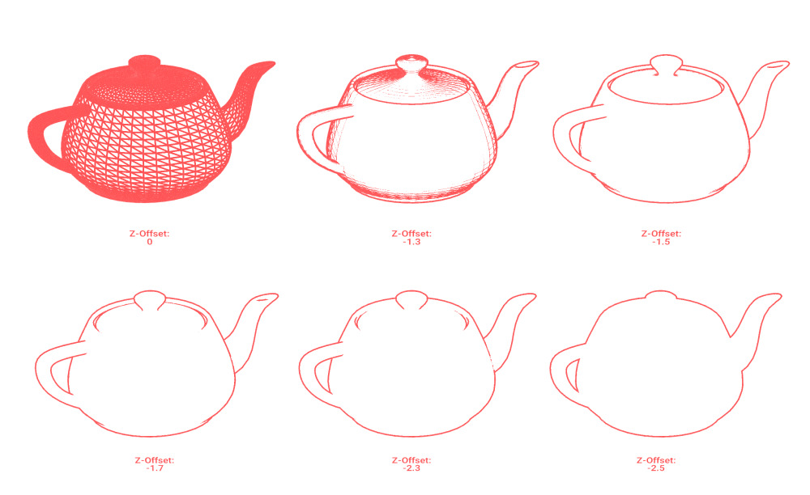
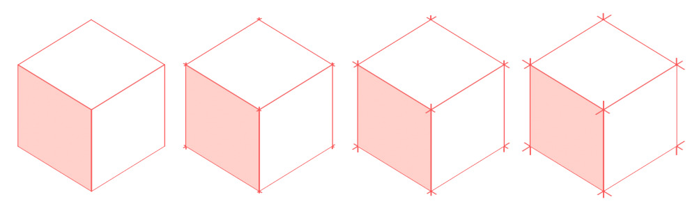

Line Groups

- Color: Sets Line Group Color.
- Draw Hidden Lines (Cube with Dashed Lines Icon): This Line Group will draw hidden lines as dashed lines.
- Link Style (Link or Broken Link Icon): Toggles if this Line Group uses a Style.
- Visibility (Eye Icon): Toggles visibility of the Line Group.
- Delete (x Icon): Deletes the Line Group.
- Line Group Menu (Chevron Icon)
- Add to Line Group (Edit Mode Only): Adds selected Edges to this Line Group.
- Remove from Line Group (Edit Mode Only): Removes selected Edges from this Line Group.
Line Group Settings
 * Line Weight: Set the Line Group's line weight. * Line Weight Group: Use a vertex group's values to modify the line weight. * Influence: Adjust the influence of the Line Weight Group. * Z Offset: Tweaks the Line Group's Distance from the screen in Clip Space. Higher values move the Lines closer to the screen. * This is useful for adjusting Line Groups that don't appear to be drawing correctly (Jagged Edges, etc.). * Making this value negative allows for the drawing of silhouettes. Higher values will move lines further backwards  * Extension: Adds a slight over-extension to each line segment in this Line Group.  * Hidden Line Color (Only Available if Draw Hidden Lines is Enabled): Sets the color of hidden lines. * Hidden Line Weight (Only Available if Draw Hidden Lines is Enabled): Sets the line weight of hidden lines. * Dash Scale (Only Available if Draw Hidden Lines or Draw Dashed is Enabled): Changes the dash size of dashed lines. Larger values make smaller dashes. * Dash Spacing (Only Available if Draw Hidden Lines or Draw Dashed is Enabled): Changes the dash spacing for dashed lines. 0.5 gives even spacing. * Draw Dashed: Draws all lines in this Line Group as dashed lines, regardless of visibility. * Screen Space Dashes: Calculates Dash Spacing in Screen Space. Useful to achieve more even dashes in still renders when some lines are nearly parallel to the view. Can cause dashes to appear to 'slide' along edges when used in animations. * Draw In Front: Makes this element Ignore Visibility tests. * Evaluate Depsgraph: Evaluate Blender's Dependency Graph before drawing this MeasureIt_ARCH element.